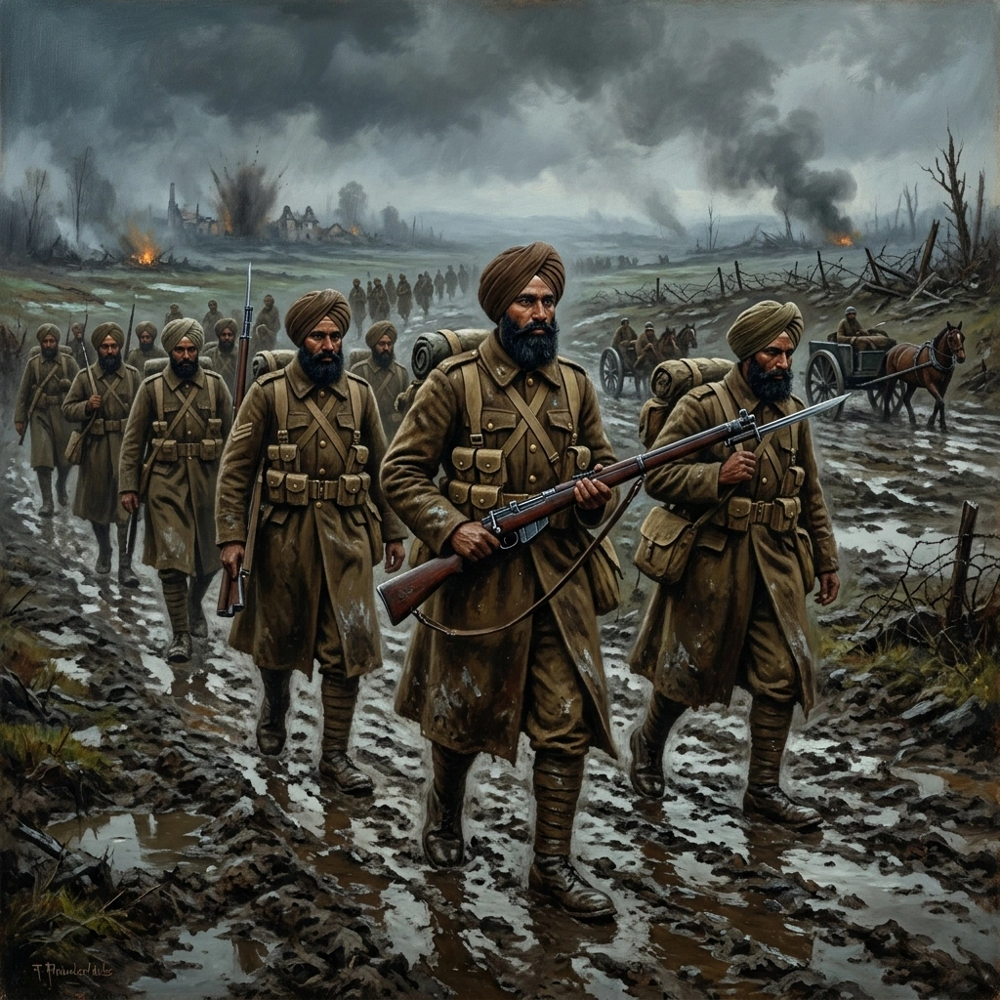

ਫ਼ਰਾਂਸ ਅਤੇ ਫਲੈਂਡਰਜ਼, 1914-15


ਸਿਰਲੇਖ: France and Flanders, 1914-15
ਸ਼੍ਰੇਣੀ: France and Flanders, 1914-15
ਕਲਾਕਾਰ: ਸਿੱਖ ਰੈਜੀਮੈਂਟal Centre
ਸਾਲ: ਇਤਿਹਾਸਕ
ਸ਼੍ਰੇਣੀ: France and Flanders, 1914-15
ਕਲਾਕਾਰ: ਸਿੱਖ ਰੈਜੀਮੈਂਟal Centre
ਸਾਲ: ਇਤਿਹਾਸਕ
ਫ਼ਰਾਂਸ ਅਤੇ ਫਲੈਂਡਰਜ਼, 1914-15
ਜਦੋਂ ਜਰਮਨੀ ਨੇ 4 ਅਗਸਤ 1914 ਨੂੰ ਬੈਲਜੀਅਮ ਤੇ ਹਮਲਾ ਕੀਤਾ, ਤਾਂ ਭਾਰਤ ਨੇ ਬ੍ਰਿਟਿਸ਼ ਸਾਮਰਾਜ ਦੇ ਹਿੱਸੇ ਵਜੋਂ ਪਹਿਲੀ ਵਿਸ਼ਵ ਯੁੱਧ ਵਿੱਚ ਦਾਖ਼ਲ ਹੋਇਆ। ਭਾਰਤੀ ਮੁਹਿੰਮ ਬਲ, ਜਿਸ ਵਿੱਚ 3ਰੀ (ਲਾਹੌਰ) ਡਿਵੀਜ਼ਨ ਸ਼ਾਮਲ ਸੀ, ਨੂੰ ਮਿਸਰ ਤੋਂ ਫਰਾਂਸ ਦੇ ਥੱਕੇ ਹੋਏ ਬ੍ਰਿਟਿਸ਼ ਮੁਹਿੰਮ ਬਲ ਨੂੰ ਮਜ਼ਬੂਤ ਕਰਨ ਲਈ ਭੇਜਿਆ ਗਿਆ। XV ਸਿੱਖ ਅਤੇ XLVII ਸਿੱਖ 26 ਸਤੰਬਰ 1914 ਨੂੰ ਮਾਰਸੇਈ ਵਿੱਚ ਉਤਰਏ, ਜਿਸ ਵਿੱਚ XV ਸਿੱਖ ਪਹਿਲੇ ਭਾਰਤੀ ਸੈਨਾ ਬਨ ਗਏ ਜੋ ਯੂਰਪੀ ਮਿੱਟੀ 'ਤੇ ਕਦਮ ਰੱਖਿਆ। ਜਲਦੀ ਨਾਲ ਦੁਬਾਰਾ ਸਾਜੋ-ਸਮਾਨ ਕਰਨ ਅਤੇ ਸੀਮਿਤ ਤਰਬੀਅਤ ਲਈ, ਬਟਾਲੀਅਨ ਅਕਤੂਬਰ ਵਿੱਚ ਉੱਤਰ ਵੱਲ ਗਏ ਅਤੇ ਵਧੀਆ ਜਰਮਨ ਫੌਜਾਂ ਖਿਲਾਫ਼ ਬਹੁਤ ਕਠਿਨ ਮੌਸਮ ਵਿੱਚ ਹਿੱਸਾ ਲਿਆ।
ਜਦੋਂ ਜਰਮਨੀ ਨੇ 4 ਅਗਸਤ 1914 ਨੂੰ ਬੈਲਜੀਅਮ ਤੇ ਹਮਲਾ ਕੀਤਾ, ਤਾਂ ਭਾਰਤ ਨੇ ਬ੍ਰਿਟਿਸ਼ ਸਾਮਰਾਜ ਦੇ ਹਿੱਸੇ ਵਜੋਂ ਪਹਿਲੀ ਵਿਸ਼ਵ ਯੁੱਧ ਵਿੱਚ ਦਾਖ਼ਲ ਹੋਇਆ। ਭਾਰਤੀ ਮੁਹਿੰਮ ਬਲ, ਜਿਸ ਵਿੱਚ 3ਰੀ (ਲਾਹੌਰ) ਡਿਵੀਜ਼ਨ ਸ਼ਾਮਲ ਸੀ, ਨੂੰ ਮਿਸਰ ਤੋਂ ਫਰਾਂਸ ਦੇ ਥੱਕੇ ਹੋਏ ਬ੍ਰਿਟਿਸ਼ ਮੁਹਿੰਮ ਬਲ ਨੂੰ ਮਜ਼ਬੂਤ ਕਰਨ ਲਈ ਭੇਜਿਆ ਗਿਆ। XV ਸਿੱਖ ਅਤੇ XLVII ਸਿੱਖ 26 ਸਤੰਬਰ 1914 ਨੂੰ ਮਾਰਸੇਈ ਵਿੱਚ ਉਤਰਏ, ਜਿਸ ਵਿੱਚ XV ਸਿੱਖ ਪਹਿਲੇ ਭਾਰਤੀ ਸੈਨਾ ਬਨ ਗਏ ਜੋ ਯੂਰਪੀ ਮਿੱਟੀ 'ਤੇ ਕਦਮ ਰੱਖਿਆ। ਜਲਦੀ ਨਾਲ ਦੁਬਾਰਾ ਸਾਜੋ-ਸਮਾਨ ਕਰਨ ਅਤੇ ਸੀਮਿਤ ਤਰਬੀਅਤ ਲਈ, ਬਟਾਲੀਅਨ ਅਕਤੂਬਰ ਵਿੱਚ ਉੱਤਰ ਵੱਲ ਗਏ ਅਤੇ ਵਧੀਆ ਜਰਮਨ ਫੌਜਾਂ ਖਿਲਾਫ਼ ਬਹੁਤ ਕਠਿਨ ਮੌਸਮ ਵਿੱਚ ਹਿੱਸਾ ਲਿਆ।
ਮੋਬਾਈਲ 'ਤੇ ਖੋਲ੍ਹੋ
ਆਪਣੇ ਫ਼ੋਨ 'ਤੇ ਇਸ ਕਲਾ ਰਿਕਾਰਡ ਨੂੰ ਦੇਖਣ ਲਈ ਸਕੈਨ ਕਰੋ।